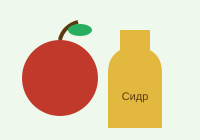

Кришталевий Хмільпивоварня і сидроварня з Буковини
Новини підприємства
Оновлено: 15 листопада 2026 р.
Запущено нову лінію розливу сидру

На підприємстві запрацювала лінія розливу продуктивністю 6000 пляшок на годину.
Перша партія вже надійшла до дистриб'юторів.
Дегустація нового сидру — 28 листопада о 18:00.
Формула вуглекислого газу в напоях: CO2,
об'єм резервуара — 103 л.
Медовуха «Медова Легенда» отримала нагороду
Напій здобув золото на (вигаданому) конкурсі «Смаки Карпат».
Міцність напою — 6 %
ABV.
Логотип, прочитаний справа наліво (тег bdo): Кришталевий Хміль.